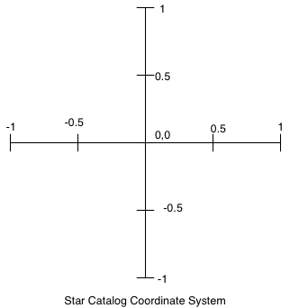

The purpose of this assignment is to give you practice in a number of areas:
Astronomers collect lots of data about stars and there are many catalogs that identify the locations of stars. In this assignment, you will use data from a star catalog to create a picture that plots the locations of stars.
Since a real data set often has some incorrect data and the occasional field missing, a cleaned up catalog has been prepared for your use in this assignment. The file stars.txt contains one line for each star that is represented in the catalog. The meaning of each field (column) is described below.
Two unique identifiers appear in the data because the star data has been collected from different sources, and the catalogs have several different ways to uniquely identify stars. The fields that you will need for this assignment include the x and y coordinates, the magnitude, the Henry Draper number, and the name (or names) of each star.
The coordinate system used for pixels in a picture has position (0,0) in the upper left corner of the picture, and the maximum x and y values are the height and width of the picture in pixels. In this assignment, all pictures will be square. See below for a comparison of the two coordinate systems.
To create a picture of the stars, the first thing we need to do is translate from the coordinate system used in the star catalog to the picture coordinate system. The coordinate systems are described above.
The first task is to write a function coords_to_pixel(orig_x, orig_y,
size): Given the x and y coordinates of a star (original_x and
original_y), and the size in pixels of the picture, return the x,
y location of the star in terms of pixels in the picture.
For example, if the size of the picture is 1000 by 1000, then the (0, 0) point in the star catalog is at pixel (500, 500), and (0.5, 0.5) from the catalog is at pixel (750, 250).
You should use coords_to_pixel as a helper function in the
remainder of the assignment.
Write a function called plot_squares(list) that takes a list
of tuples, where each tuple is a point in the coordinate system from the
catalog, creates an empty 100 by 100 pixel picture, plots the points as 2 by 2
pixel squares, and returns the picture.
Implement the following functions in plot_stars.py:
| Function Name | Description |
|---|---|
read_coords(file)
|
Given an open text file that contains a star catalog as specified above, return three dictionaries. The first is keyed on the Henry Draper number and the values are tuples containing the x and y coordinates of each star. The second
dictionary is also keyed on the Henry Draper numbers and
contains the magnitudes ( The third dictionary is keyed on the names of the stars and the values are the Henry Draper numbers. If a star has more than one name, each name will appear as a key in the third dictionary. If a star does not have a name it will not be represented in the third dictionary. |
plot_plain_stars(picture, int, dict) |
Given a square picture object, the size of the the picture in
pixels, and a dictionary containing the x,y coordinates of stars
as values in the dictionary, plot the stars of the picture, and
return the picture. Assume that the initial picture is black. The
stars are plotted as 2x2 pixel white-filled rectangles. (The
add_rect_filled function in the picture module will
help you out.) |
plot_by_magnitude(picture, int, dict, dict) |
Given a square picture object, the size of the the picture in
pixels, a dictionary containing the x,y coordinates of stars as
values in the dictionary, and a dictionary containing the
magnitudes, plot the stars on the picture, and return the picture.
Assume that the initial picture is black. In this case the stars
are plotted as white-filled rectangles, but the size of the
rectangle is a function of the magnitude of the stars. Since
brighter stars have smaller magnitude values, you will calculate
the size of the rectangle as follows: star_size =
round(10.0 / (magnitudes[id] + 2)) |
Remember to test your code thoroughly. As in previous assignments, you
are asked to submit a file test_star_plot.py
that contains your test module.
Every function you write should have at least one test in the
test module, and each test should be specific (only testing one
or a small number of conditions), unique (not redundant), and
well-documented. You will find it useful to create short catalog
files (with only 2 or 3 stars) for testing.
The image below is an example of the output of your work in this part of the assignment.
We are providing several text files that describe that describe constellations. Each file contains two star names per line of the file. Each pair of star names represent one line to be drawn for the constellation. You will write a function to read this data into a dictionary, and add the lines between the stars on to a picture containing a star map.
Download the files of constellation data and implement the following
functions in plot_stars.py:
| Function Name | Description |
|---|---|
read_constellation_lines(file)
|
Given an open text file that contains constellation data in
the form described above, return a dictionary with star names of
type str as keys and lists of star names as values.
For each key, the associated list contains all stars connected
by a line to the key star. |
plot_constellations(Picture, dict, dict, dict, Color, int)
|
Given the following arguments in order:
|
As in Part 1, you may use as many helper functions as you wish. Style and design count, and we expect each function to have at least one test in the test module.